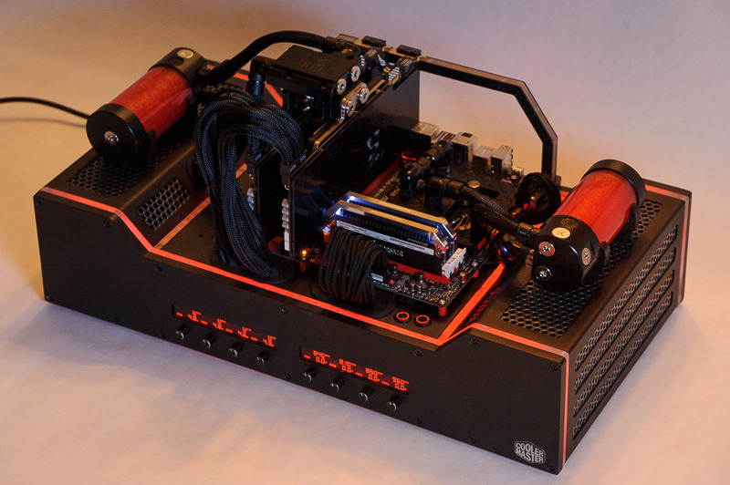

This is the cheapest one I could find, but there are nicer ones from Europe which I'm lusting after.
http://www.newegg.com/Product/Product.a ... 6811353002
 by Davaris » 04 Feb 2015, 06:02
by Davaris » 04 Feb 2015, 06:02

 by Jesse Meyer » 04 Feb 2015, 07:15
by Jesse Meyer » 04 Feb 2015, 07:15

 by Davaris » 04 Feb 2015, 07:42
by Davaris » 04 Feb 2015, 07:42
Jesse Meyer wrote:Do you have cats?
 by Jesse Meyer » 04 Feb 2015, 09:10
by Jesse Meyer » 04 Feb 2015, 09:10
 by Davaris » 04 Feb 2015, 09:54
by Davaris » 04 Feb 2015, 09:54
 by Fratercide » 04 Feb 2015, 16:07
by Fratercide » 04 Feb 2015, 16:07

 by Davaris » 04 Feb 2015, 23:56
by Davaris » 04 Feb 2015, 23:56
 by Grognard » 05 Feb 2015, 00:04
by Grognard » 05 Feb 2015, 00:04
 by Jay » 06 Feb 2015, 08:34
by Jay » 06 Feb 2015, 08:34


 by Davaris » 06 Feb 2015, 11:17
by Davaris » 06 Feb 2015, 11:17
If you water cool them, this wouldn't be an issue
 by Fratercide » 06 Feb 2015, 15:55
by Fratercide » 06 Feb 2015, 15:55
 by Grognard » 06 Feb 2015, 17:29
by Grognard » 06 Feb 2015, 17:29
 by Grognard » 06 Feb 2015, 17:32
by Grognard » 06 Feb 2015, 17:32
Fratercide wrote:At the end of the day I think how much power your comp consumes is going to equal how much it heats up the room (the heat has to go somewhere)
 by Davaris » 06 Feb 2015, 18:15
by Davaris » 06 Feb 2015, 18:15
Fratercide wrote:At the end of the day I think how much power your comp consumes is going to equal how much it heats up the room (the heat has to go somewhere)
Users browsing this forum: No registered users and 1 guest
| Company | Contact | Privacy Policy | Site Map | Copyright © 2001–2015 Terathon Software LLC |  |